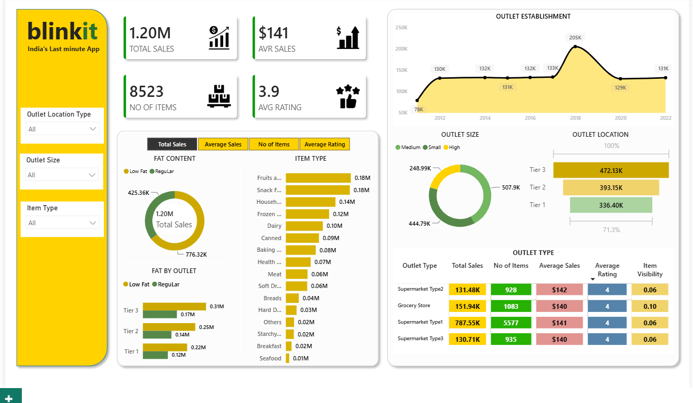
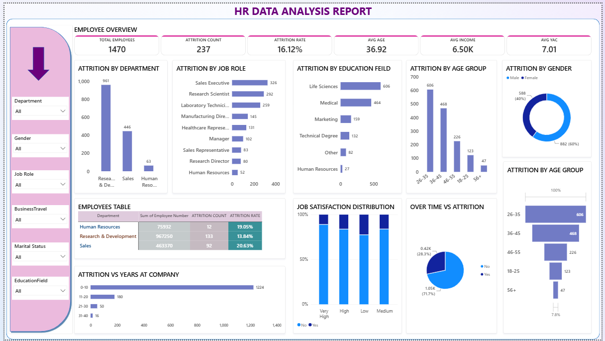

Transforming operational and sales data into actionable insights using dashboards, KPI reporting, and analytics.
Data Analyst with hands-on experience in SQL, Power BI, and Excel, skilled at transforming operational and sales data into actionable insights.
Experience in dashboard reporting, KPI tracking, data cleaning, trend analysis, and operational analytics.

Interactive sales and inventory dashboard with KPI cards and outlet analysis.

Employee attrition analysis, workforce insights, and department performance.
Built reports, monitored KPIs, analyzed operational data, and supported business decisions.
Worked with production data, inventory analysis, and reporting systems.
Email: pankaj.sharma.he@gmail.com
GitHub: github.com/Pankaj-sharma-analyst